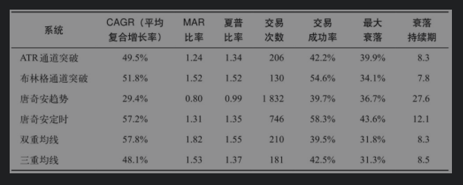

| 返回首页 | 经典交易系统 |
| 以下交易系统均可实盘，注意加入资金管理。 | |
| ATR通道突破系统 | 它把真实波动幅度均值（即ATR）用作波动性指标。350日移动平均收盘价加上7个ATR就是通道的顶部，减去3个ATR就是通道的底部。如果前一日的收盘价穿越了通道顶部，则在今日开盘时做多；如果前一日的收盘价跌破通道底部，则在开盘时做空。当收盘价反向穿越了移动平均线，交易者们就会退出。 |
| 布林格突破系统 | 布林线（Bollinger band）是约翰·布林格（John Bollinger）发明的一种波幅通道。这个系统的布林线是通过350日移动平均收盘价加减2.5倍标准差而得出的。如果前一日的收盘价穿越了通道的顶部，则在开盘时做多；如果前一日的收盘价跌破通道的底部，则在开盘时做空。 |
| 唐奇安趋势系统 | 它是海龟系统的一个简化版本。它采用20日突破入市策略，10日突破退出策略，还有一个350日/25日指数移动平均趋势过滤器。如果25日均线在350日均线之上，只能做多；如果25日均线在350日均线之下，只能做空。2ATR的止损退出 |
| 定时退出唐奇安趋势系统 | 定时退出唐奇安趋势系统是唐奇安趋势系统的一个变体，它采用的是定时退出策略，而不是突破法退出策略。它在80天之后退出，没有任何形式的止损点。 |
| 双重移动均线系统 | 只在100日均线穿越350日均线时买入或卖出。这个系统始终不离市场，无论是做多还是做空。唯一的退出点就是短期均线穿越长期均线的时候：此时，交易者退出上一笔交易，开始一笔相反方向的新交易。这个系统属于一个相当长期的趋势跟踪系统，交易频率比其他大多数系统都要低。 |
| 三重移动均线系统 | 这个系统使用三种移动均线：150日、250日和350日均线。交易者在150日均线穿越250日均线时买入或卖出。最长期的350日均线扮演的是趋势过滤器的角色。只有150日和250日均线位于350日均线的同一侧时才能交易。如果两者都高于350日均线，只能做多；如果两者都低于350日均线，只能做空。 |
|  | |